Best for
Inland NCR homes, balcony / main door without heavy pet clawing, fabricators building hinged or sliding mesh panels, mid-budget whole-house upgrades.
Width Roll width across the weave (2–6 ft) — not door height.
Mesh Openings per inch: 14 / 16 / 18 (e.g. 14×14, 18×16).
Wire Diameter in mm primary; BWG (ALU) / SWG (SS) secondary.
Form Flexible rolls · cut pieces · ₹/sq ft or full roll.
Machhar jali (मच्छर जाली) is the North India trade name for woven insect screen used on doors and windows — also called darwaze wali jali (दरवाजे वाली जाली), mosquito mesh, fly screen, or aluminium / SS door mesh. At GARG INDUSTRIAL MESH, Sector 9 Noida, this hub covers aluminium woven door mesh and SS 304 & SS 202 woven mosquito mesh sold as flexible rolls (and cut pieces) in widths 2–6 ft.
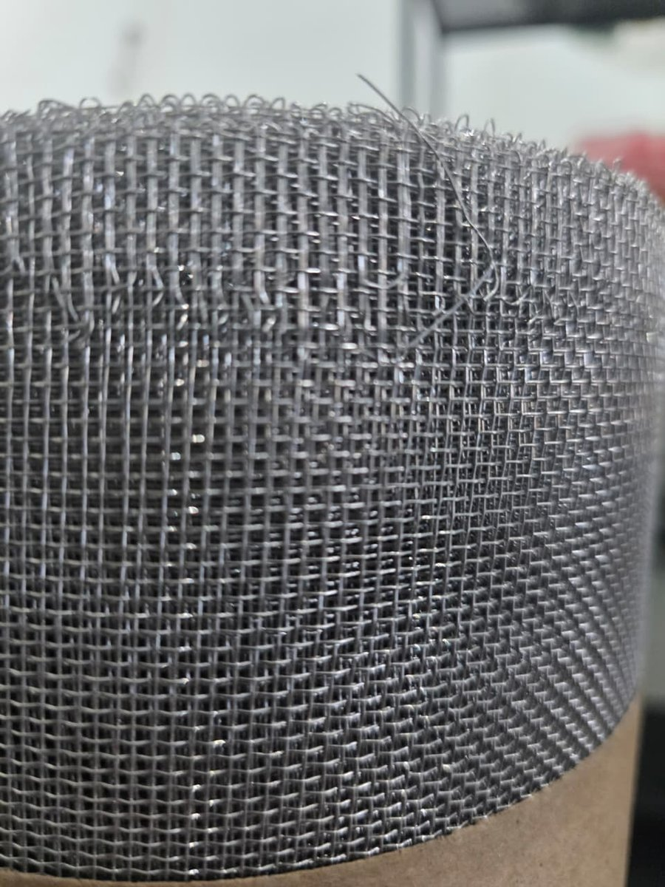
Click to enlargeOne word — jali — hides four product families. Land on woven insect screen before you RFQ fencing or plate.
| Product | How it is made | Stops mosquitoes? | GARG link |
|---|---|---|---|
| Machhar / door jali (this page) | Wires woven (plain weave) | Yes — fine 14–20 mesh | Widths & SKUs on this hub |
| SS welded mesh | Wires spot-welded at crosses | No — openings too large | SS welded mesh (201 & 304) |
| MS / GI welded mesh | Same weld process — mild / galvanized | No | MS & GI welded mesh |
| Chain link / heera jali | Interlocked diamond fencing | No | Chain link mesh |
| Perforated sheet | Punched holes in plate | Not a door screen | Perforated sheets |
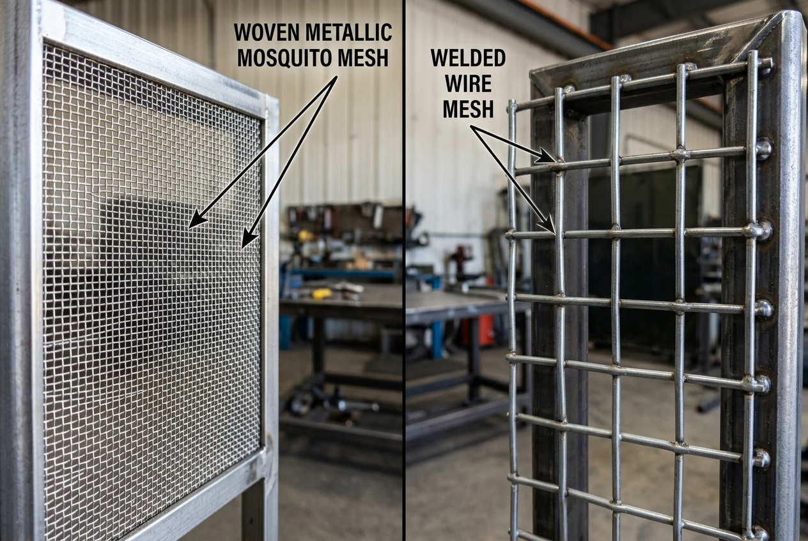
Click to enlargeAlso not: hexagonal chicken / murga jali, industrial filter wire cloth (10–500 mesh filtration), or ready-made framed mosquito net doors (hinged / sliding / pleated systems) — we supply the cloth those systems use.
Lightweight aluminium woven insect mesh for inland doors and windows — the mid-tier upgrade from fiberglass when you want a flatter, crisper screen without stainless price. Live site used to advertise ALU only to 5 ft; this pack documents stock widths through 6 ft (and 4.5 ft) with explicit mesh counts on the product page.
Inland NCR homes, balcony / main door without heavy pet clawing, fabricators building hinged or sliding mesh panels, mid-budget whole-house upgrades.
14×14 dominant India SKU; also 16×16 / 18×16. Wire ≈ 0.22–0.38 mm. Finish: bright / silver / SS-look; black coated on enquiry.
2, 2.5, 3, 3.5, 4, 4.5, 5, 6 ft roll widths. Cut length from the roll; full rolls often ~30 m / 100 ft class (confirm packing).
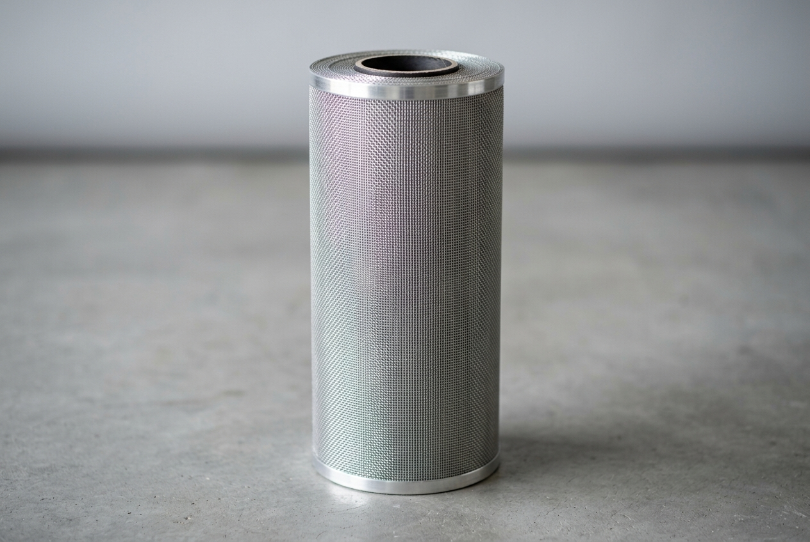
Click to enlarge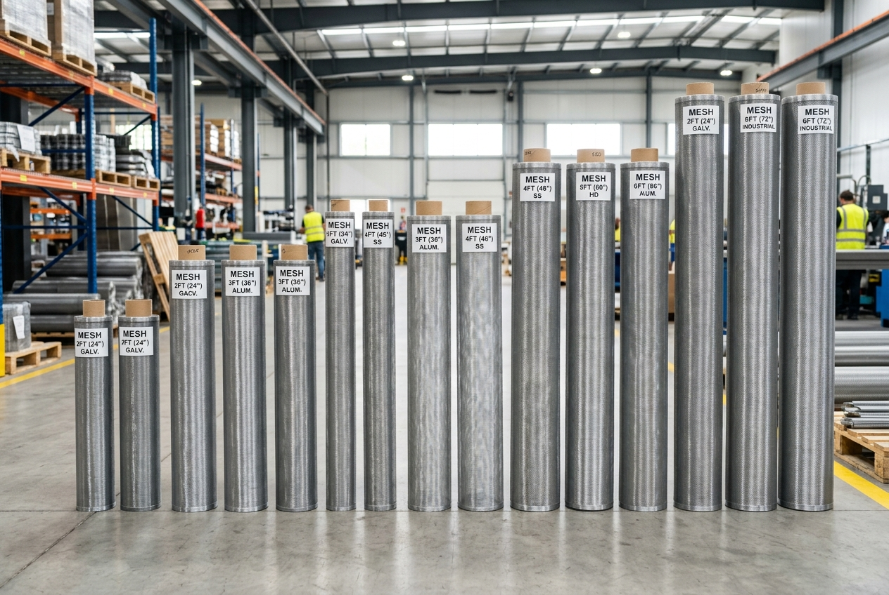
Click to enlargeStainless woven insect screen — the same machhar / darwaze wali jali family as aluminium, in SS 304 (premium) and SS 202 (value). This is not SS welded mesh and not industrial filtration cloth. Grades are quoted honestly; we do not ship unlabeled “SS” when you asked for 304.
Higher nickel (~8–10.5%). Prefer for monsoon-facing doors, pets/rodents, humid NCR balconies, longer outdoor life. Common counts: 16×16, 18×16, 18×18, 20×20.
Economy stainless — manganese replaces much of the nickel. Suitable when cost leads and exposure is milder. Not a silent upgrade to “almost 304.”
Flexible rolls 2–6 ft; wire often ~0.18–0.35 mm by count. Natural or black coated finishes on enquiry. Cut pieces by sq ft for fabricators.
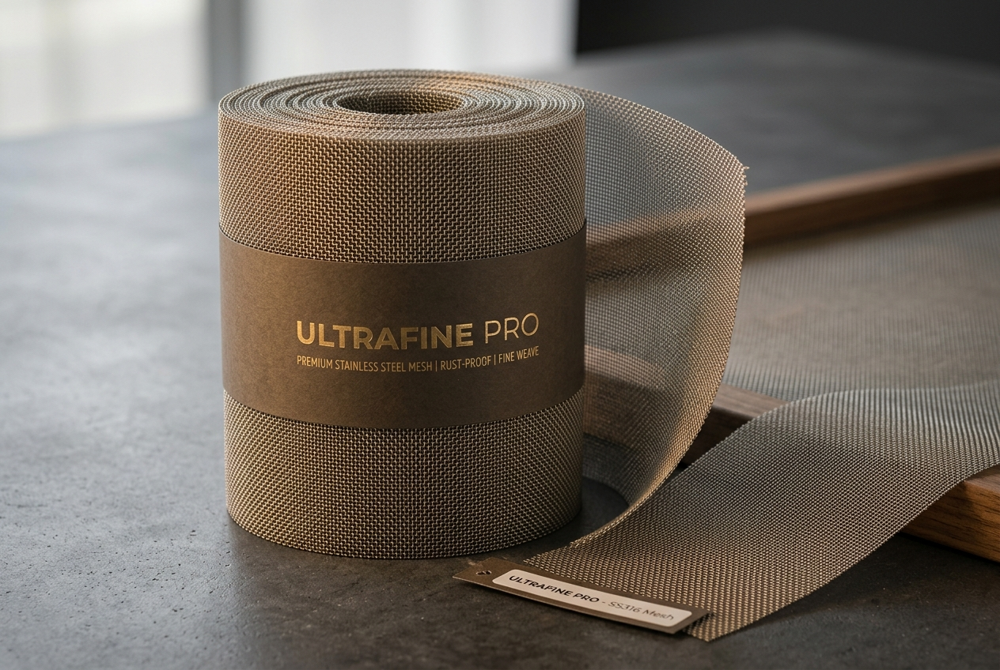
Click to enlargeFine insect wire has little sacrificial thickness — grade differences show up faster than on thick railing pipe. Use this table before chasing the cheapest “SS 304” IndiaMART card.
| SS 304 | SS 202 | |
|---|---|---|
| Chemistry story | Higher Ni (~8–10.5%); Cr ~18–20% | Lower Ni (~4–6%); Mn replaces Ni cost |
| Corrosion on fine wire | Better for wet / monsoon / pollution splash | Earlier tea-staining risk outdoors |
| Best default | NCR balcony, main door, pets, coastal-adjacent | Budget / milder indoor or dry exposure |
| SEO / market trap | “Cheapest 304” floors often = mislabel | Often co-listed with 201 as “cheap SS” |
| GARG rule | Quote 304 → ship 304 | Quote 202 → ship 202 (not 304 rename) |
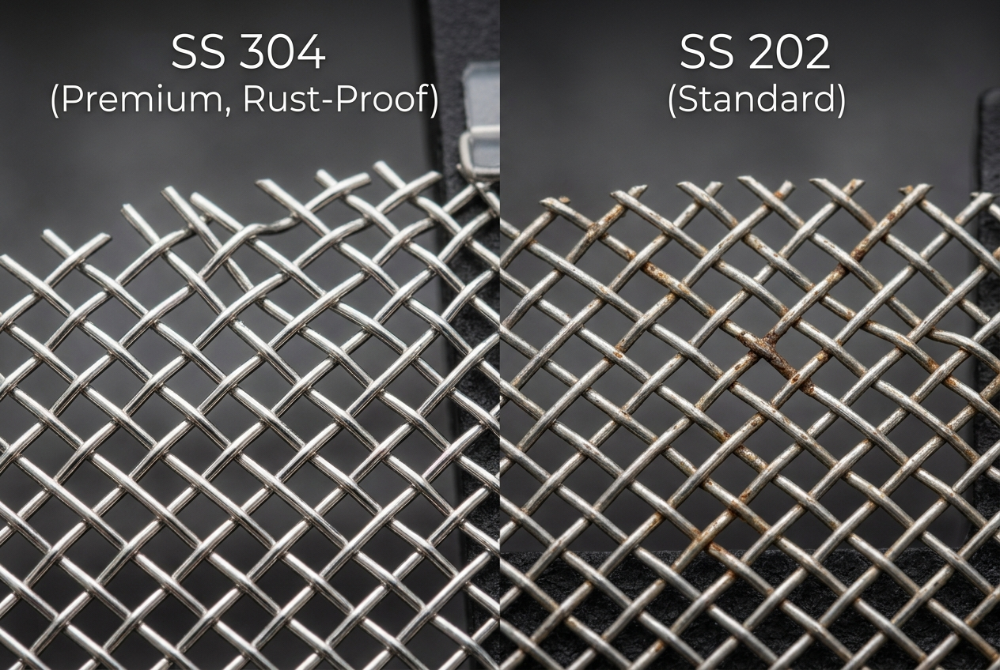
Click to enlargeMost homes should mix materials by opening, not buy premium stainless for every bedroom vent.
| Situation | Best default | Runner-up | Avoid |
|---|---|---|---|
| Most rooms, insects only | Fiberglass | Aluminium | SS everywhere (cost) |
| Main / balcony door, no pets, inland | Aluminium | SS 304 | Thin fiberglass alone |
| Pets or rodents | SS 304 | Pet-grade polyester | Standard fiberglass |
| Coastal / salt air | SS 304 / 316 | Fiberglass (won’t rust, may tear) | Bare aluminium as “coastal metal” |
| Rental / temporary | Fiberglass / magnetic | ALU cut piece | Premium SS overkill |
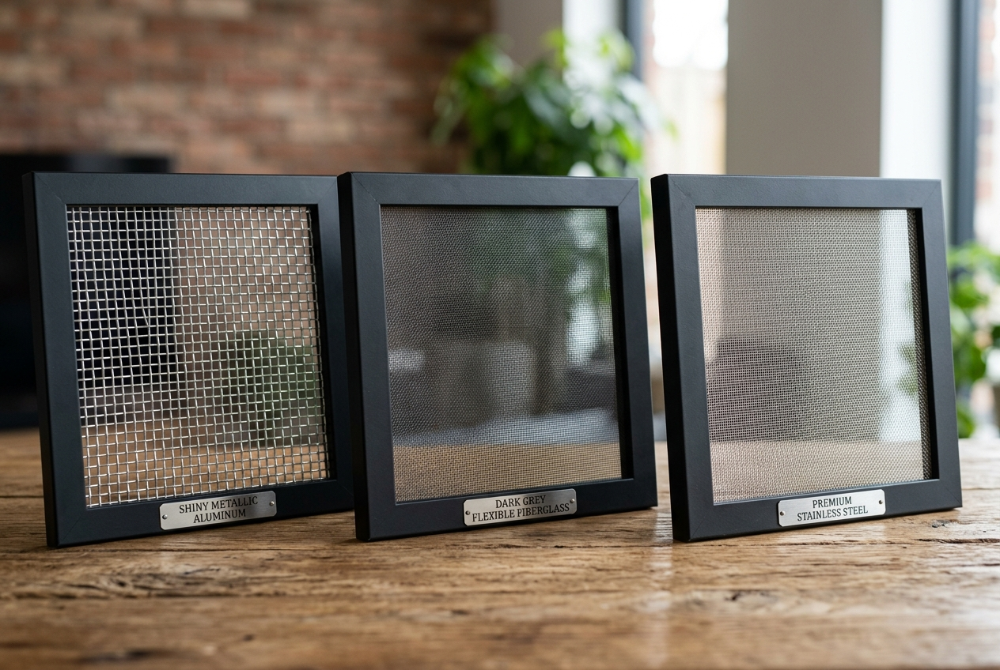
Click to enlarge2–6 ft means roll width, not door height. India trade stocks the half-foot ladder below. Live gap closed: older ALU PDP stopped at 5 ft and omitted 4.5 ft — this hub lists the full set.
| Width (ft) | ≈ mm | Typical use | ALU | SS 304 / 202 |
|---|---|---|---|---|
| 2 | ~610 | Small windows / partial fills | ✓ | ✓ |
| 2.5 | ~762 | Window channels | ✓ | ✓ |
| 3 | ~914 | Very common door/window | ✓ | ✓ |
| 3.5 | ~1067 | Wider windows / doors | ✓ | ✓ |
| 4 | ~1219 | Workhorse door width | ✓ | ✓ |
| 4.5 | ~1372 | Wide openings (often missing on old PDP) | ✓ | ✓ |
| 5 | ~1524 | Large door / balcony panels | ✓ | ✓ |
| 6 | ~1829 | Wide continuous width without seam | ✓ | ✓ |
Roll length is separate (commonly 30 m, 50 ft, or 100 ft). Pricing is usually ₹ / sq ft (width × length) or per full roll — confirm packing on RFQ.
Mesh count = openings per linear inch. Higher count → finer holes → better small-insect block → slightly less airflow. Live ALU PDP said only “standard mesh opening”; this page puts counts above the fold.
| Mesh | Role | ALU | SS | Typical wire Ø |
|---|---|---|---|---|
| 14×14 (14 mesh) | Standard fly/mosquito ALU | Dominant | Common | ALU ~0.25–0.38 mm · SS ~0.30–0.50 mm |
| 16×16 (16 mesh) | Mid fine | Available | Common | ~0.22–0.35 mm |
| 18×16 (18 mesh class) | Fine insect default | Common | Very common | ~0.19–0.25 mm |
| 18×18 | Fine square | Less than 14×14 | Common | ~0.22–0.25 mm |
| 20×20 | Extra fine | Occasional | Premium SS | ~0.18–0.20 mm common |
Gauge language: ALU catalogues often use BWG; SS catalogues often use SWG. On every RFQ, prefer mm wire diameter so there is no ambiguity. 12×12 is coarser / specialty — not the default India mosquito retail count.
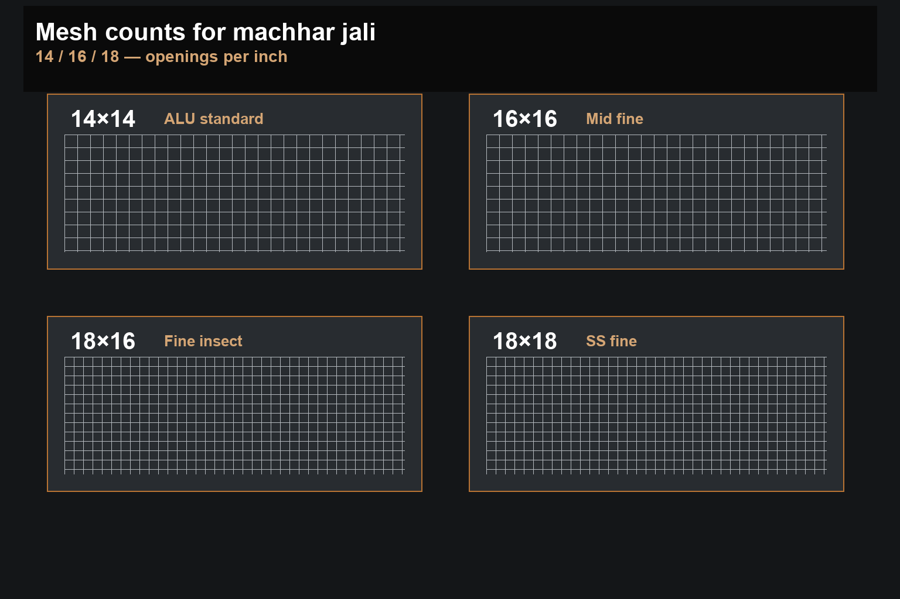
Click to enlargeGARG sells roll cloth. Application language (sliding door, magnetic net, 3-track window) maps to how fabricators and DIY cutters use that cloth — we are not an installer of framed systems.
Hinged aluminium mesh leaf on wooden/steel chowkat — ALU inland; SS 304 for pets / main door / monsoon.
Sliding panel in spare outer track of Alu/uPVC windows — common 2–4 ft widths.
Large openings and high traffic — bias ALU or SS 304; ask width that covers without seam.
Same woven cloth cut for magnetic door/window screens — kit ≠ our SKU, same end-use keywords.
Steam and cleaners favour SS 304 over economy 202 when wet wipe is frequent.
Durable insect screens for high footfall — specify grade, count, and roll width clearly.
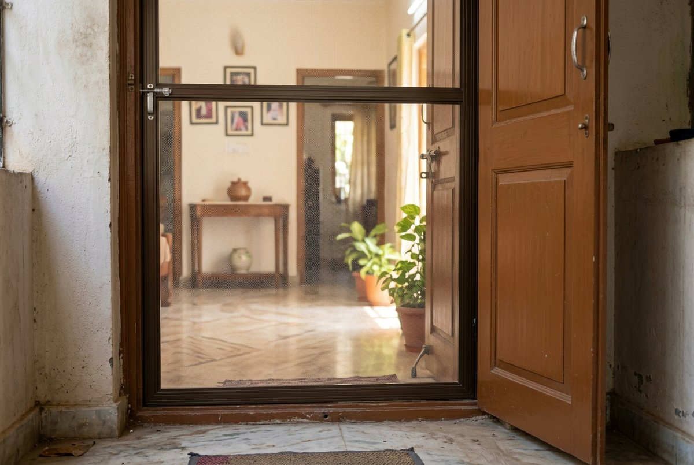
Click to enlarge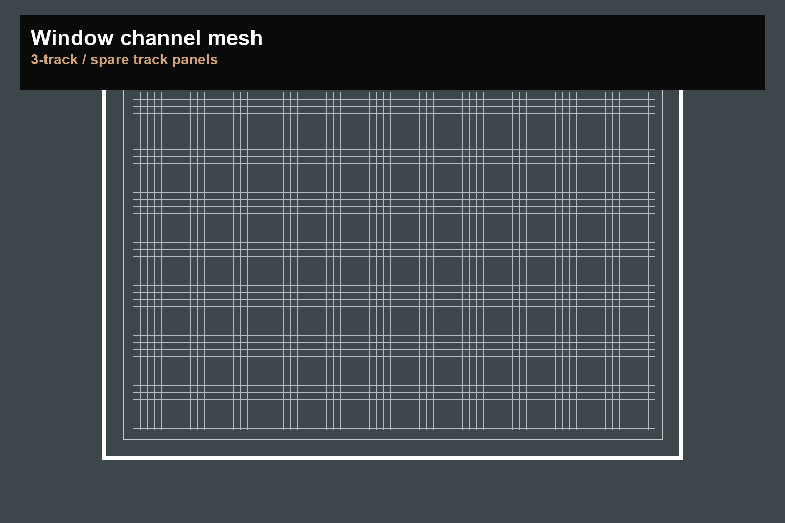
Click to enlarge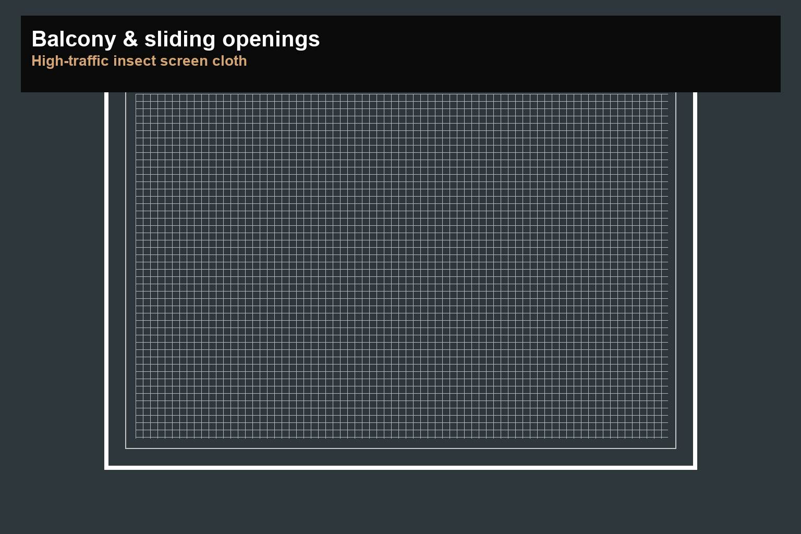
Click to enlarge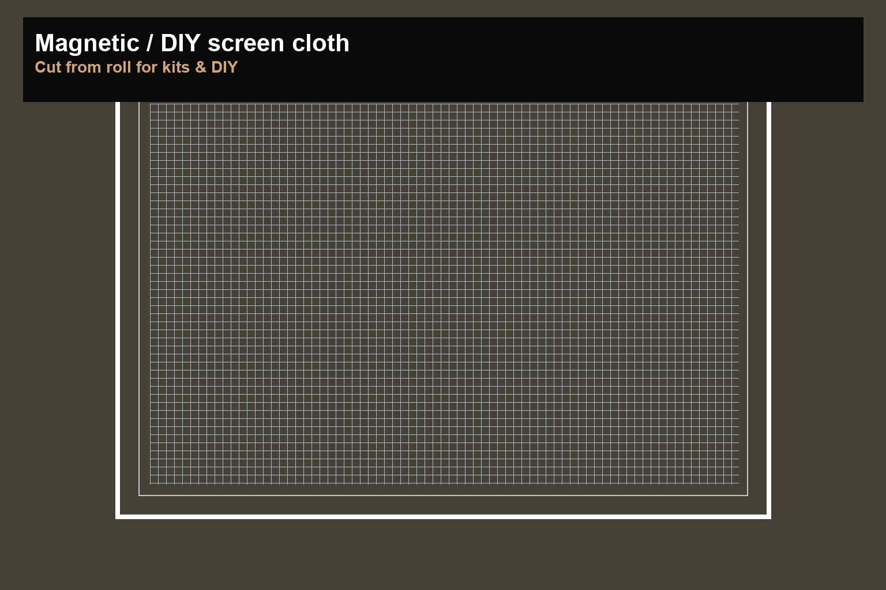
Click to enlargeMarketplace cards mix three layers: (A) raw roll cloth, (B) framed mesh doors, (C) premium pleated systems. This hub quotes layer A (and cut cloth for fabricators). We do not publish a fake “today’s fixed ₹/sq ft” sticker — nickel, gauge, and width move.
Indicative market chatter (not GARG stickers): ALU roll cloth often sits mid-band; SS mosquito rolls vary widely; framed doors are a different BOM. Ask for today’s factory quote with GST invoice.
Copy this into WhatsApp for a clean factory quote:
Noida-first: GARG INDUSTRIAL MESH at G-25, Sector 9, Noida 201301 — phone 9910238277. We supply woven ALU and SS machhar jali across the NCR constellation without fake city-doorway clone pages.
Plant / walk-in RFQ base — Sector 9.
Rolls for fabricators & site supply.
Wholesale / fabricator cloth supply.
Door & window mesh for NCR jobs.
East NCR delivery on enquiry.
South-east NCR fabricator supply.
Local SEO note: We rank and convert as a roll / wholesale mesh supplier — not as a pleated mosquito-door installer. Installer SERPs are a different intent cluster.
Delivery: NCR by arrangement · outstation by courier/transport · GST invoice on supply.
Related fencing: Same plant also supplies SS welded, MS/GI welded, chain link, perforated.
Visible answers match FAQPage schema 1:1.
This page is woven mosquito / door mesh (machhar jali / darwaze wali jali) — plain weave flexible rolls for insect screens. It is not SS or MS/GI welded mesh (rigid square fencing grid). For fencing weldmesh see our SS welded and MS/GI welded hubs.
GARG supplies woven aluminium and SS mesh rolls and cut pieces for fabricators and DIY. We do not sell framed hinged, sliding, or pleated mosquito door systems as finished units. Fabricators use our cloth in those frames.
It is roll width — how wide the woven roll is across the weave. Available widths: 2, 2.5, 3, 3.5, 4, 4.5, 5 and 6 ft. You cut length from the roll to suit the opening. Door panel height is a separate framing measurement.
Yes. Aluminium and SS machhar jali are available in roll widths through 6 ft — including 4.5 ft and 6 ft — not capped at 5 ft. Confirm current stock when you RFQ.
Common insect counts are 14×14 (ALU workhorse), 16×16, 18×16 and 18×18. India buyers often say 14 mesh, 16 mesh or 18 mesh. Higher count = finer openings and better small-insect block with slightly less airflow. State count on the RFQ.
SS 304 has higher nickel and better wet/monsoon corrosion behaviour on fine wire — prefer it for NCR balconies, outdoor doors, pets and coastal-adjacent jobs. SS 202 is economy stainless (manganese replaces much of the nickel) for budget / milder exposure. We quote the grade you order; 202 is not a silent substitute for 304.
No. Both are low-nickel 200-series economy grades and buyers often say 201/202 together. Our economy woven door mesh grade is SS 202; premium is SS 304. Ask for the exact grade in writing on the quotation.
Fiberglass suits budget low-traffic windows. Aluminium is a mid-tier inland door/window cloth with crisp shape. SS 304 (or honest SS 202 for milder duty) suits pets, main doors, monsoon and higher abuse. Mix materials by opening — you rarely need SS on every window.
No. Welded mesh and chain-link openings are far larger than insect mesh. For flies and mosquitoes use woven machhar jali (aluminium or SS). Chain link is diamond fencing; perforated sheet is punched plate — different products.
Machhar jali / मच्छर जाली usually means architectural woven mesh on doors and windows. मच्छरदानी often means a soft bed mosquito net. This page is door/window woven mesh rolls, not bed canopy nets.
ALU insect mesh is commonly about 0.22–0.38 mm (often BWG-style listings). SS insect mesh is commonly about 0.18–0.35 mm depending on mesh count (SWG/mm on catalogues). Always pair gauge talk with mm on the RFQ.
Yes. Fabricators cut roll width/length to fit spare tracks and 3-track aluminium or uPVC window channels, hinged door frames, balcony sliders and magnetic DIY screens. Tell us opening type and preferred width.
No grade is lifetime rust-proof on outdoor fine wire. SS 304 resists tea-staining better than SS 202 in monsoon and humidity. Coastal salt may need 304 minimum and discussion of 316 if available. Occasional rinse helps all grades.
No. Cold-worked austenitic wire can show magnetism. Magnet tests are not grade certification for woven mesh. Prefer written grade on the quote; Mn drop testers or MTC help on critical jobs.
Rates move with grade, mesh count, wire dia, width, finish and nickel markets. Marketplace ₹/sq ft cards often mix raw roll cloth with framed door systems. We quote by RFQ factors — material, count, wire, width, qty, city — with GST invoice. No fake fixed sticker on this page.
Yes. Supply from G-25, Sector 9, Noida 201301 across Noida, Greater Noida, Delhi, Gurugram/Gurgaon, Ghaziabad and Faridabad. Outstation rolls by courier/transport on enquiry.
Inland main/balcony door without pets: aluminium is often enough. Pets, monsoon splash or longer outdoor life: SS 304. Budget indoor: SS 202 or ALU. Frame type (hinged/sliding/magnetic) is separate from mesh material.
No. This hub is insect screen mesh counts (about 14–20) for doors and windows. Industrial filtration cloth (very fine mesh counts up to hundreds) is a different product family — ask filtration if that is your need.
Measure the clear opening or channel that the cloth must cover, add overlap for beading/spline, then pick the next stocked roll width that covers the larger dimension without wasteful seaming. Order length (or sq ft) from that width. WhatsApp photos of the opening help.
Plant/office: G-25, Sector 9, Noida, Uttar Pradesh 201301. Call or WhatsApp 9910238277 with material (ALU / SS 304 / SS 202), mesh count, wire if known, roll width, qty/sq ft, use (door/window), and city.
Supplying wholesale mesh rolls to the top aluminum and uPVC window fabricators across Delhi, Noida, and Gurugram.
MTC available on request for bulk SS 304 mosquito mesh orders. We quote 304, we ship true 304.
Ready stock for common widths (2ft - 6ft). Dispatched directly from Sector 9, Noida for quick NCR delivery.
Need ALU or SS 304/202 woven door mesh in 2–6 ft rolls? Tell us material, mesh count, width, quantity, and city.
GARG INDUSTRIAL MESH · G-25, Sector 9, Noida 201301
Call / WhatsApp 9910238277 · gargindustrialmesh.com/aluminium-ss-machhar-jali/
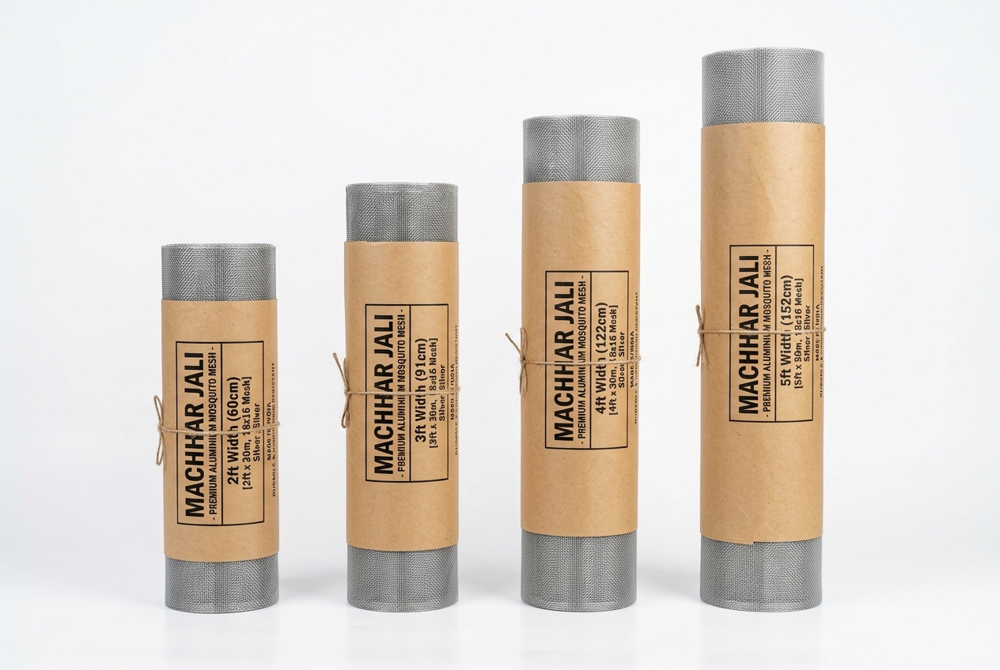
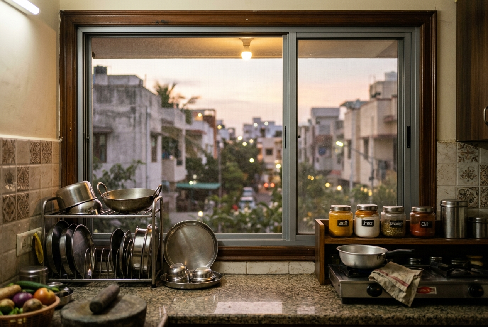
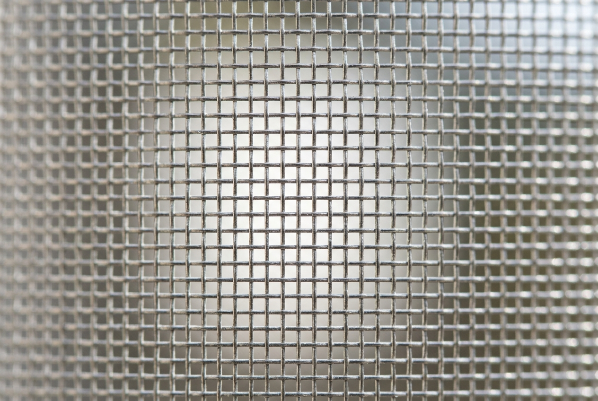
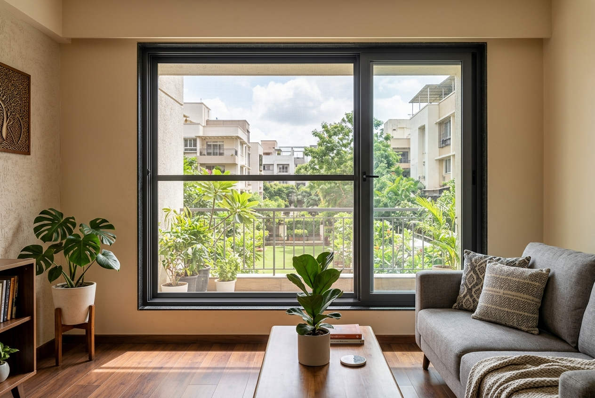
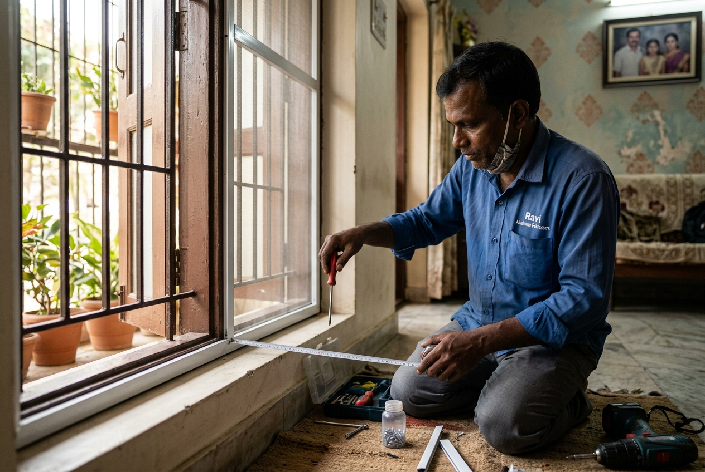
We supply aluminium and SS 304/202 woven machhar jali from Noida Sector 9 — material, mesh count, wire, width, and qty to your RFQ. Need fencing weldmesh? SS welded · MS/GI welded.
Factory quote with lead time, packing and GST invoice — no invented catalogue stickers.
Need ALU / SS machhar jali — send material, mesh count, width and qty.